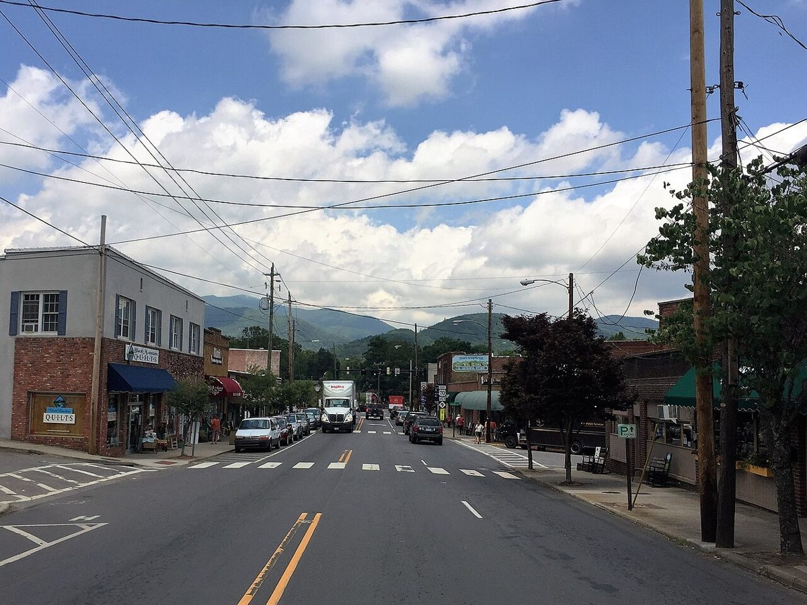

Make room for one good stop
Browse downtown before continuing east. Lake Tomahawk Park is another possible stop, but dam repairs may affect access: do not assume the full lake loop is open. Check the town’s current notice before choosing the walk.
NORTH CAROLINA · OPTIONAL DISCOVERY
An optional variation for your November road trip. Add it only if it suits your pace; no extra overnight or reservation is assumed.
THE FEEL OF THE PLACE
Black Mountain is a compact, walkable town east of Asheville, where independent shops, cafés and mountain views make a good pause on the way toward Linville. It is especially useful on Tuesday if you prefer a town breakfast to another early hike. Keep it selective: a meal and a short browse fit much better than trying to add another full sightseeing day.

Representative photograph from the linked archive; seasons and current conditions will differ.
AN OPTIONAL CHANGE OF PACE
Browse downtown before continuing east. Lake Tomahawk Park is another possible stop, but dam repairs may affect access: do not assume the full lake loop is open. Check the town’s current notice before choosing the walk.
EAT WELL, KEEP IT SIMPLE
Casual choices for this stop, with restaurant information and independent reviews or local guides to help you choose. Published prices exclude extras unless noted; recheck hours before setting off.
Breakfast and all-day tacos at 117 Cherry Street. A relaxed and flexible stop before heading farther into the mountains, with options for a lighter meal and plant-based eaters.
Budget: Budget-flexible à-la-carte taco option; current menu total not verified.
When to go: Official Tuesday 8am–9pm; closed Monday. Fits the Tuesday eastbound route.
Burgers, tacos and broader pub fare at 207 West State Street. A comfortable downtown lunch option after a browse; useful if you want a seated meal with varied dietary choices.
Budget: Casual moderate-price lunch; current exact menu prices not verified.
When to go: Official Monday–Thursday 11am–9:30pm; first come, first served.
CHECK BEFORE YOU GO
Check opening hours and road or trail access shortly before travel. Keep the detour flexible around daylight and your next stop.